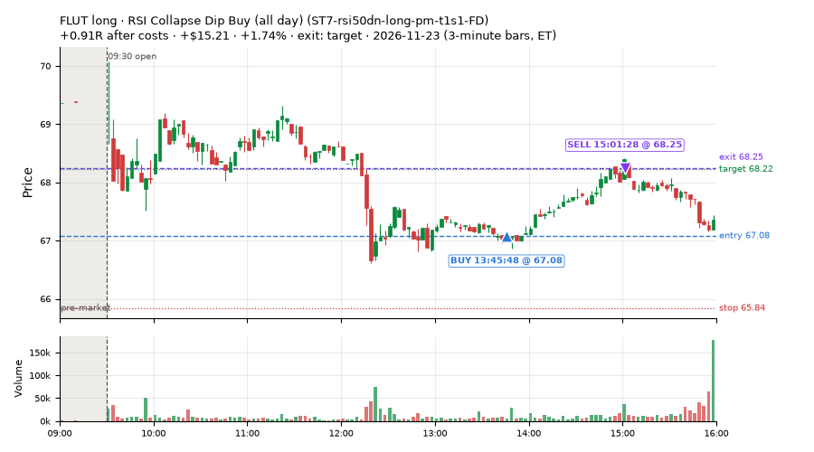
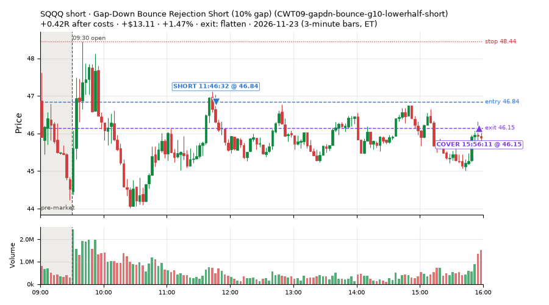
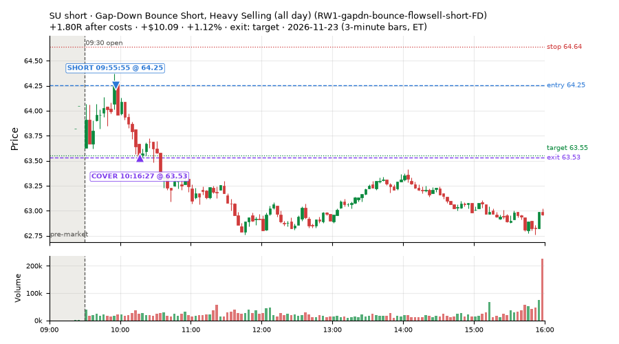
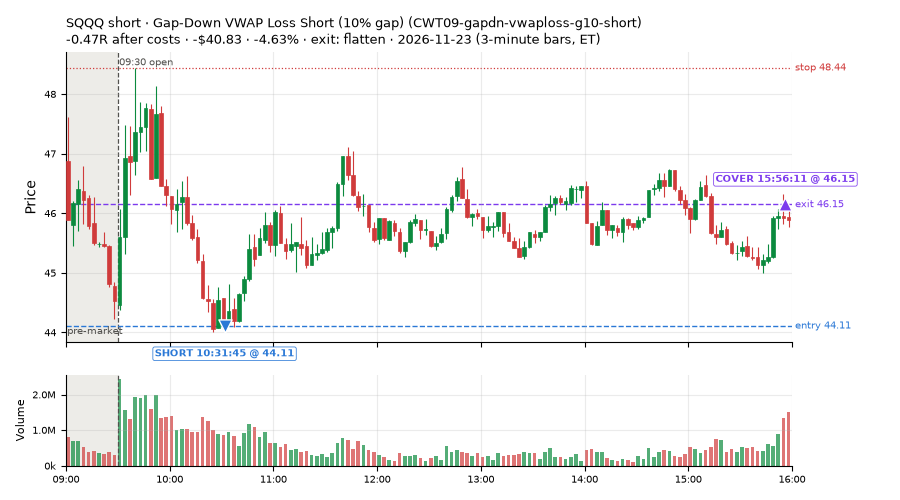
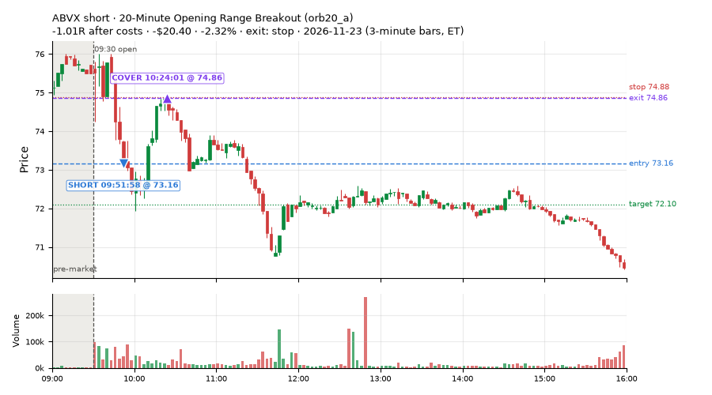
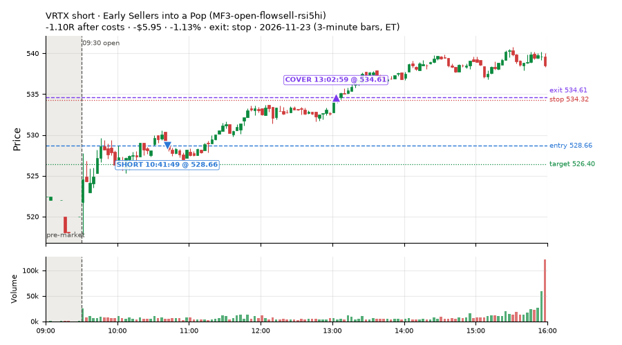
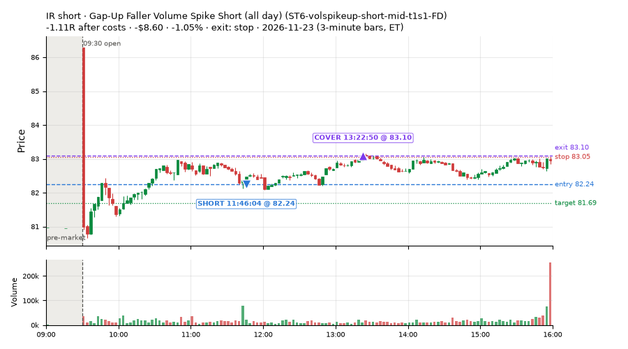
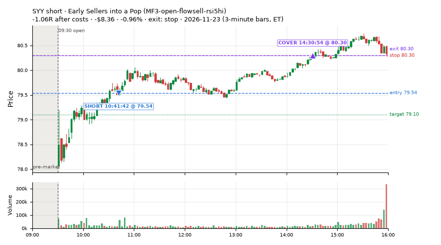

50 trades · win rate 46% · P/L $-45.16
PROBATION: no live setup has passed both locked test periods. 10 owner-directed setups added 2026-10-08 (MarcoFlow top 5 + 5 new), untested live. RW6G1 (RW6 + VWAP band guard) added 2026-10-09, probation.

| Symbol | Setup | Side | In | Out | Entry | Exit | Exit reason | % gained | P/L |
|---|---|---|---|---|---|---|---|---|---|
| FLUT | RSI Collapse Dip Buy (all day) (ST7-rsi50dn-long-pm-t1s1-FD) | long | 13:45 | 15:01 | 67.08 | 68.25 | target | +1.74% | $15.21 |
| SQQQ | Gap-Down Bounce Rejection Short (10% gap) (CWT09-gapdn-bounce-g10-lowerhalf-short) | short | 11:46 | 15:56 | 46.84 | 46.15 | flatten | +1.47% | $13.11 |
| SU | Gap-Down Bounce Short, Heavy Selling (all day) (RW1-gapdn-bounce-flowsell-short-FD) | short | 09:55 | 10:16 | 64.25 | 63.53 | target | +1.12% | $10.09 |
| Symbol | Setup | Side | In | Out | Entry | Exit | Exit reason | % lost | P/L |
|---|---|---|---|---|---|---|---|---|---|
| SQQQ | CWT09-gapdn-vwaploss-g10-short | short | 10:31 | 15:56 | 44.11 | 46.15 | flatten | -4.63% | $-40.83 |
| ABVX | orb20_a | short | 09:51 | 10:24 | 73.16 | 74.86 | stop | -2.32% | $-20.40 |
| VRTX | MF3-open-flowsell-rsi5hi | short | 10:41 | 13:02 | 528.66 | 534.61 | stop | -1.13% | $-5.95 |
| IR | ST6-volspikeup-short-mid-t1s1-FD | short | 11:46 | 13:22 | 82.24 | 83.10 | stop | -1.05% | $-8.60 |
| SYY | MF3-open-flowsell-rsi5hi | short | 10:41 | 14:30 | 79.54 | 80.30 | stop | -0.96% | $-8.36 |








Signal to fill: median 1s, 90th percentile 3s (50 trades). Bars close each minute; the order follows the bar close.
Best excursion (MFE): median 0.59R; worst (MAE) median 0.63R. 18% of trades never got +0.25R in our favour; 1 reached +1R and still closed at or below 0.
| Symbol | Setup | Best R | Worst R | Closed R |
|---|---|---|---|---|
| MLI | ST6-volspikeup-short-mid-t1s1-FD | +1.04 | -1.02 | -0.96 |
| APD | MF3-open-flowsell-rsi5hi | +0.80 | -1.05 | -1.09 |
| AEP | MF3-open-flowsell-rsi5hi | +0.59 | -1.14 | -1.24 |
| ABVX | orb20_a | +0.71 | -1.03 | -1.01 |
| DGX | MF3-open-flowsell-rsi5hi | +0.56 | -1.01 | -1.14 |
| Entry time | Trades | Win | Avg R | P/L |
|---|---|---|---|---|
| 09:50-10:30 | 7 | 29% | -0.01 | $-16.97 |
| 10:30-11:30 | 29 | 52% | -0.04 | $-40.83 |
| 11:30-13:00 | 4 | 25% | -0.49 | $-6.31 |
| 13:00-14:00 | 3 | 100% | +0.84 | $27.37 |
| 14:00-16:00 | 7 | 29% | -0.32 | $-8.42 |
| Setup | Trades | Win | Avg R after costs | Adj R (net of SPY) | Avg R ex-market (all sessions) | P/L |
|---|---|---|---|---|---|---|
| Gap-Down Bounce Rejection Short (10% gap) (CWT09-gapdn-bounce-g10-lowerhalf-short) | 1.0 | 100% | +0.42 | +0.53 | -0.32 (beta -0.63, n 5) | $13.11 |
| Gap-Down VWAP Loss Short (10% gap) (CWT09-gapdn-vwaploss-g10-short) | 1.0 | 0% | -0.47 | -0.55 | +0.07 (beta +0.24, n 9) | $-40.83 |
| Gap-Down Bounce-off-Low Fade (all day) (L3-gap-slope-lowdist-FD) | 2.0 | 0% | -0.63 | -0.42 | -0.05 (beta -1.17, n 113) | $-10.82 |
| Early Sellers into a Pop (MF3-open-flowsell-rsi5hi) owner-directed; holdouts once: Sep-Oct -0.059R n170, Apr-Jun -0.034R n729 | 27.0 | 56% | +0.06 | -0.94 | -0.19 (beta -0.64, n 74) | $14.33 |
| Big Gainer Dip-and-Pop (NS1-rsidip-rsi5pop-long) owner-directed; holdouts once: Sep-Oct +0.326R n10, Apr-Jun +0.056R n119 | 1.0 | 100% | +0.13 | +0.07 | +0.23 (beta +0.25, n 8) | $0.99 |
| Gap-Down Bounce Short, Heavy Selling (all day) (RW1-gapdn-bounce-flowsell-short-FD) | 7.0 | 57% | +0.20 | +0.32 | -0.18 (beta -0.81, n 170) | $14.38 |
| Gap-Up Faller Volume Spike Short (all day) (ST6-volspikeup-short-mid-t1s1-FD) | 6.0 | 0% | -0.77 | -0.50 | -0.06 (beta -1.20, n 44) | $-33.41 |
| RSI Collapse Dip Buy (all day) (ST7-rsi50dn-long-pm-t1s1-FD) | 3.0 | 67% | +0.26 | +0.31 | +0.24 (beta +1.10, n 19) | $21.35 |
| 20-Minute Opening Range Breakout (orb20_a) failed Apr-Jun holdout: -0.040R/trade over 421 trades | 2.0 | 0% | -0.57 | -0.25 | -0.07 (beta +0.10, n 40) | $-24.26 |
Market direction (SPY, beta 1) accounted for $97.50 of today's $-45.16; the rest ($-142.66) came from the setups themselves. Avg R net of SPY: -0.53 (incl. a hedge leg's cost; report only).
13 setups live today. Today: 261 signals, 50 taken, 0 lost because another setup held the symbol (0%). Since 2026-10-09 (32 sessions): 11427 signals, 4460 taken, 769 lost to other setups (7%). Peak open positions today 32 of 400 slots. Earnings blackout removed 148 symbols before scanning.
Simulated playing time (not live): 6627 what-if trades of signals not taken, avg -0.14R, 48% winners; of them 616 lost to another setup (avg +0.02R).
Silent: IDX1-qqq100-0955-TQQQ-trail, IDX1-qqq100-0955-TQQQ-hold, IDX2-spy075-0945-3x-trail, IDX3-spy075-0955-3x-trail, IDX5-spy050-0945-3x-trail · Crowded out: RW4-ns3-adv150-short-FD, RW4-ns3-adv150-short, NS3-failed-vwap-reclaim-short-FD · Starved: orb20_a, MF1-945-flowsell-vwapup, RW6G1-ns2-up3-vwap2sd-short, LIQ-pdl-sweep-open15-vwap-long, MF5-flowsell-vwapup-rsi5hi, ST5-pdbrkup-short-mid-t05s1-FD, ST3-rsi5up-short-pm-t1s1-FD, exhaustion_short-FD, NS2-sma50break-overbought-short, MF1-945-flowsell-vwapup-FD
| Prio | Setup | Today sig / taken | Sessions | Signals / taken / trades | Taken/day | Expected/day | Lost to other setups | Lost to (setup n) | Top skip reasons | SIMULATED: not-taken n / avg R / win | Verdict |
|---|---|---|---|---|---|---|---|---|---|---|---|
| 1 | Gap-Up Faller Volume Spike Short (all day) ST6-volspikeup-short-mid-t1s1-FD | 11 / 6 | 26 | 80 / 44 / 44 | 1.69 | 1.24 | 4 | RW4-ns3-adv150-short-FD 3, NS3-failed-vwap-reclaim-short 3, NS3-failed-vwap-reclaim-short-FD 1 | split-tape short gate 13, spread / quote / size 13, not shortable / shorts off 6 | 34 / -0.01R / 53% | slow 8.5 entries/week; ~7 weeks to 60 trades |
| 2 | Gap-Down Bounce Rejection Short (10% gap) CWT09-gapdn-bounce-g10-lowerhalf-short | 59 / 1 | 8 | 162 / 5 / 5 | 0.62 | – | 0 | – | not shortable / shorts off 147, spread / quote / size 4, other 4 | 156 / -0.47R / 27% | slow 3.1 entries/week; ~19 weeks to 60 trades |
| 3 | Panic Flush Reversal (5x volume) CWT05-flush-m05-v5-long | 0 / 0 | 8 | 20 / 9 / 9 | 1.12 | – | 1 | CWT09-gapdn-vwaploss-g10-short 1 | spread / quote / size 6, other 4, symbol held by another setup 1 | 11 / +0.23R / 82% | slow 5.6 entries/week; ~11 weeks to 60 trades |
| 4 | Gap-Down VWAP Loss Short (10% gap) CWT09-gapdn-vwaploss-g10-short | 59 / 1 | 8 | 161 / 9 / 9 | 1.12 | – | 0 | – | not shortable / shorts off 145, spread / quote / size 5, price through stop/target 2 | 151 / -0.68R / 16% | slow 5.6 entries/week; ~11 weeks to 60 trades |
| 5 | Early Sellers into a Pop MF3-open-flowsell-rsi5hi | 44 / 27 | 26 | 233 / 74 / 74 | 2.85 | 9.19 | 38 | MF3-open-flowsell-rsi5hi-FD 35, MF5-flowsell-vwapup-rsi5hi 13, MF5-flowsell-vwapup-rsi5hi-FD 7 | spread / quote / size 44, symbol held by another setup 38, split-tape short gate 38 | 159 / -0.12R / 49% | slow 14.2 entries/week; ~4 weeks to 60 trades |
| 6 | Afternoon Higher-Low Long (near-miss) NM-HL-T75-pm-long | 0 / 0 | 8 | 20 / 16 / 16 | 2.00 | – | 0 | – | spread / quote / size 4 | 4 / -0.05R / 25% | slow 10.0 entries/week; ~6 weeks to 60 trades |
| 7 | Big Gainer Dip-and-Pop NS1-rsidip-rsi5pop-long | 2 / 1 | 9 | 15 / 8 / 8 | 0.89 | 0.92 | 0 | – | spread / quote / size 4, price through stop/target 2, other 1 | 7 / +0.23R / 86% | slow 4.4 entries/week; ~14 weeks to 60 trades |
| 8 | Gap-Down Bounce-off-Low Fade (all day) L3-gap-slope-lowdist-FD | 25 / 2 | 31 | 547 / 113 / 113 | 3.65 | 9.76 | 9 | RW6-ns2-up3-short-FD 3, NS2-sma50break-overbought-short-FD 3, L3-gap-slope-rsi5hi-FD 3 | not shortable / shorts off 234, daily loss cap 72, split-tape short gate 50 | 425 / -0.09R / 50% | ok 18.2 entries/week |
| 9 | Gap-Down Rebound Overbought Short (all day) L3-gap-slope-rsi5hi-FD | 42 / 0 | 16 | 761 / 100 / 100 | 6.25 | 13.41 | 11 | L3-gap-slope-fromopen-FD 8, L3-gap-slope-lowdist-FD 4, RW6G1-ns2-up3-vwap2sd-short-FD 2 | not shortable / shorts off 407, daily loss cap 119, spread / quote / size 68 | 639 / -0.06R / 64% | ok 31.2 entries/week |
| 10 | 20-Minute Opening Range Breakout orb20_a | 4 / 2 | 31 | 116 / 40 / 40 | 1.29 | 6.79 | 0 | – | trigger missed between polls 32, spread / quote / size 18, other 12 | 69 / +0.07R / 52% | starved 1.29 entries/day vs ~6.79 expected |
| 11 | Gap-Down Bounce Short, Heavy Selling (all day) RW1-gapdn-bounce-flowsell-short-FD | 11 / 7 | 15 | 284 / 170 / 170 | 11.33 | 17.10 | 10 | RW3-gapdn-rsi5pop-flowsell-short-FD 5, MF2-open-rsimidhi-flowsell-FD 3, RW5-heat30-flowsell-rsi5pop-gapdn-short-FD 3 | spread / quote / size 51, other 35, not shortable / shorts off 17 | 112 / +0.22R / 64% | ok 56.7 entries/week |
| 12 | Big Loser Flush Buy NS5-sma50-flush-oversold-long | 0 / 0 | 4 | 24 / 20 / 20 | 5.00 | 2.41 | 0 | – | spread / quote / size 4 | 4 / -0.04R / 50% | ok 25.0 entries/week |
| 13 | RSI Collapse Dip Buy (all day) ST7-rsi50dn-long-pm-t1s1-FD | 4 / 3 | 11 | 22 / 19 / 19 | 1.73 | 2.17 | 1 | orb20_a 1 | symbol held by another setup 1, daily loss cap 1, other 1 | 3 / -0.26R / 33% | slow 8.6 entries/week; ~7 weeks to 60 trades |
Every trade is attached as a CSV you can open and edit in Excel or Google Sheets. Live page: https://misiti15.github.io/MCF/live/